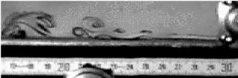
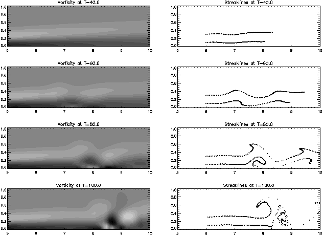

The Wall Jet Page
Last modified: March 30,1995.
A wall jet is a flow created when fluid is blown tangentially along a
wall. This flow has a lot of interesting instabilities because it
combines both a mixing layer and a boundary layer. The results
structures are nonlinearly stable for a short time. I (Louis Rossi, then a
doctoral student at University of
Arizona) investigated these structures with Bruce Bayly (Univ. of
Arizona), Yakov Cohen and Miki Amitay (Technion, Haifa Israel). Bruce
and I developed the necessary tools to numerically simulate wall jets
while Yakov and Miki built wind tunnel and water tank facilities to
generate real wall jets in a laboratory.
Experimental work.
Wind tunnel and water tank experimental facilities were constructed by
Yakov Cohen and Miki Amitay at the Technion in Haifa, Israel. The wind
tunnel is used to measure flow velocities, but it is difficult to
visualize the flow this way. Instead, they use a water tank. The flow is
visualized by injecting dye into the flow at the nozzle top and bottom.
The patterns you see are called streaklines.

This is a photograph of their water tank experiment. The flow moves
from right to left. The numbers correspond to centimeters. The nozzle
height (not visible) is 0.5 centimeters, and the viscosity of water is
0.01 cm^2/sec. Thus, the Reynolds number of this flow ((defined by jet
flux divided by viscosity) is 284. This particular flow is being forced
with small amplitude 2 hz disturbances with a narrow vibrating ribbon
high above the flow. These disturbances excite the natural instabilities
of wall jet boundary layers. It is interesting that the instabilities
are nonlinearly stable in that they saturate into dipole structures
which evolve slowly in a reference frame moving with the flow.
Numerical work.
Some of my numerical work has explored the possibility that nozzle
effects are not important in the dipole instabilities. Rather, the
dipoles form and evolve though boundary layer/mixing layer interactions.
To test this hypothesis, I perturbed an exact boundary layer solution
for a laminar wall jet. This exact solution does not solve the full
Navier-Stokes equations. Rather, it solves the boundary layer equations
which are valid far downstream in a narrow region close to the wall.
This is a reasonable assumption for a wall jet.
Using a variation of the Corrected Core Spreading Vortex Method to
compute vorticity perturbations, I excited the exact profile with a
small amplitude 2 hz disturbance and observed the formation of stable
dipoles. In the images below the time is measured in 0.01 seconds. The
images on the left correspond to the total vorticity field while images
on the right are simulated streakline patterns. All units of length are
is cm and viscosity is 0.01 in order to match the water tank experiment.
(Notice that the disturbance is initiated 5 cm downstream from the
"nozzle.") The Reynolds number is 250.

Here is a pdf of a paper I wrote for a conference proceeding. L. F. Rossi. Vortex Computations of Wall Jet
Flows. Proc. 1st Annual Forum on Vortex Methods for Engineering
Applications. Feb. 1995.
rossi@math.udel.edu